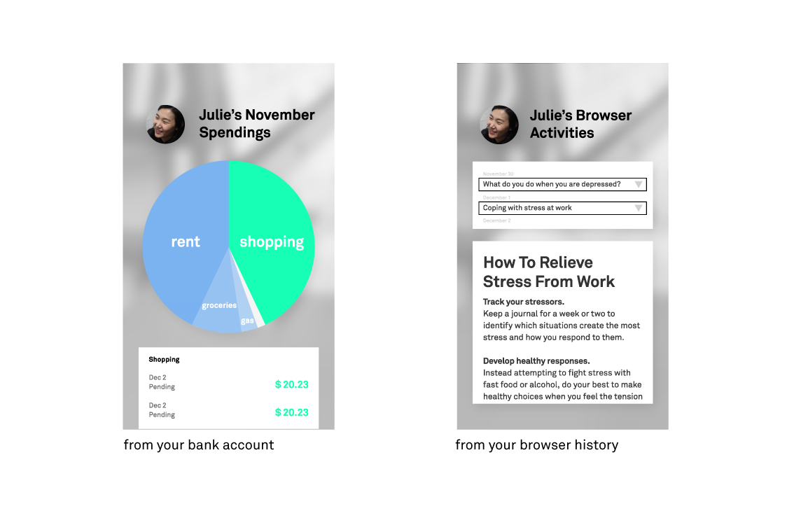
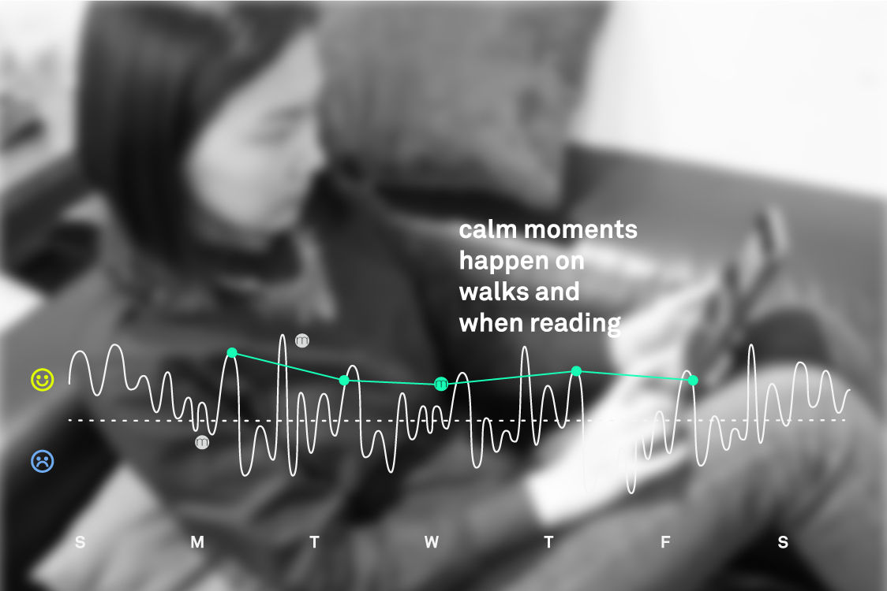

mira
Brief
Wearable intelligence to reduce anxiety and build connections.
Scope
Interaction Design & AI Concept
Team
Joo Oh & Isaac Waring
Institution
University of Washington, Professor Axel Roesler
A WEARABLE THAT HELPS GUIDE YOU THROUGH YOUR EMOTIONS
Sometimes, we don't even know how we feel. Some people hide their feelings through use of substances, certain behaviors, or unhealthy relationships. These do not make the problem go away, but mira is something that might help people more aware of the patterns in their actions and emotions.
Objective: To use advancements in AI to allow people to know how their actions or behaviors are affecting their emotions.
Solution: mira uses AI technology to track your emotions and piece together patterns based on your digital footprint and location tracking on your phone.
KEY INNOVATIONS
By analyzing biometrics (skin conductivity, heart rate, body temperature), mira can make note of your mood.
Using your digital history, mira creates a bigger picture of what is happening with your online life and what it learns from your biometrics.
This picture becomes more complete with location tracking. From this, mira creates a pattern for you to see. Particularly stressful times can occur at work or after you get an email from your boss, but calming moments happen on walking commutes.
Through our research, we found that human connection is the key to happiness. This is why mira has a feature that helps you form more face-to-face connections with people in your social circle.
PROCESS
For this project, we talked to family counselors for advice on how to proceed with mira. There are some issues that only therapists should address.

For this project, we talked to family counselors for advice on how to proceed with mira. There are some issues that only therapists should address. We made this graph to help define what mira can address and what we should focus on. Mira can be a helpful tool for those with small problems and a useful companion for those in therapy looking to attack issues from both sides.
It was helpful to look at other existing technology that approached mental health. We sketched out scenarios of use for one of these products, Woebot. Woebot is a cognitive therapy chatbot that checks in with you every day.
When creating a scenario for mira, we wanted to display several behaviors that might unconnected but that could point to bigger issues.